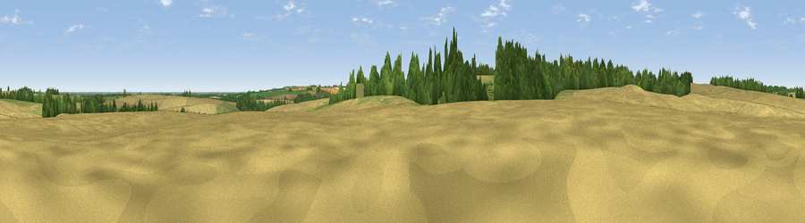

Viewpoint near Aby
#31309 in England · top 57% of its area beats it · near AbyWhere it is
The exact computed spot (TF 37607 78161). Click the marker for map links.
The view, rendered

A 360° render of this exact spot computed from the terrain model, tree cover and land cover — summer colours, afternoon light, calibrated against photographs of famous viewpoints. Real trees, hedges and buildings will differ in detail.
The panorama
Grey silhouette: terrain skyline in each direction (720 bearings, Earth curvature and refraction included). Dashed green: skyline with trees (+15 m) and buildings (+8 m) as obstacles. Blue strip: how far the ground is visible on each bearing.
Where the view opens
Wedge length = distance to the farthest visible ground on that bearing (vegetation-aware). Rings at 10, 25 and 50 km.
What fills the view
68% cropland · 18% woodland · 13% grassland ·
Angular shares of the visible panorama (visual magnitude), not map area. Landscape diversity 0.38 (0–1 Shannon).
Key numbers
More beautiful places nearby
The staircase of upgrades: each row has a higher view potential than everything closer. Driving times are estimates from straight-line distance, calibrated against real road routing — check an actual route before setting out.
| Place | Direction | Drive | Score |
|---|---|---|---|
| Meagram Top | ENE · 2 km | ~5 min | 48.8 |
| Viewpoint near Tetford | WSW · 4 km | ~10 min | 58.0 |
| Warden Hill | SW · 5 km | ~12 min | 59.5 |
| Viewpoint near East Keal | S · 14 km | ~25 min | 66.0 |
| Viewpoint near Claxby | NW · 31 km | ~49 min | 71.5 |
| Garrowby Hill (A166 crest) | NW · 97 km | ~121 min | 71.9 |
| Viewpoint near Bempton | N · 98 km | ~122 min | 72.8 |
| Viewpoint near Speeton | N · 99 km | ~123 min | 74.4 |
53.28257, 0.06257 · source: osm peak · position refined by local search. Computed location — check access rights before visiting.